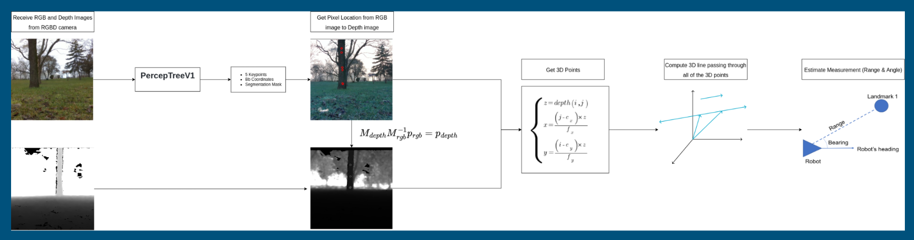
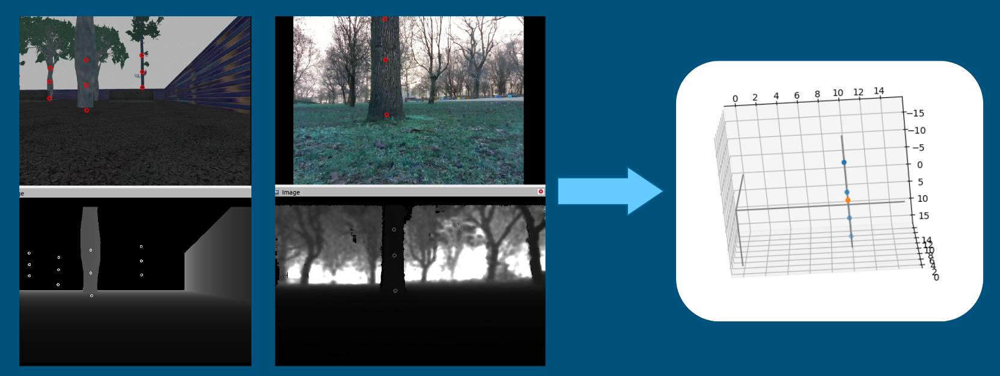

Implementation: SLAM
EKF SLAM system that uses trees as landmarks. The landmarks are detected by the PerceptTreeV1 model, which uses the Detectron2 as the backbone for the detection process. the following is the front end pipeline to use the detected trees as 2D landmarks.
Three main keypoints are detected along the trees' trunks and a 3D line is fitted in order to discard outliers (lines with more than a threshold inclination).
